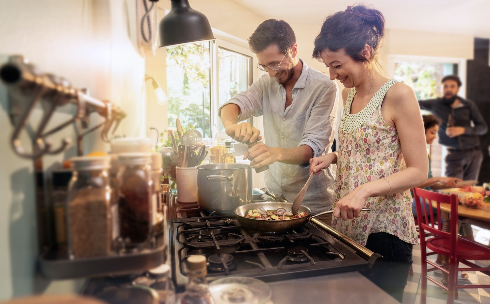

Dlaczego warto gotować w domu?

-
Gotowanie w domu to oszczędność.
To świetny sposób na zaoszczędzenie sporej gotówki w domowym budżecie
Posiłek przygotowany w domu jest znacznie tańszy niż obiad w restauracji lub gotowe danie zakupione na wynos.
Co więcej, jeśli będziesz starał się kupować produkty sezonowe zaoszczędzisz jeszcze więcej, a posiłki będą świeże i smaczne. -
Wiesz, z czego gotujesz i możesz jeść dietetycznie
Jest to najbardziej skuteczna dieta w historii. Jest udowodnione, że jedzenie poza domem jest główną przyczyną niezdolności do utraty wagi i utrzymania prawidłowej masy ciała.
W przeciwieństwie do posiłków w restauracji masz pełną kontrolę nad tym, co jesz i z czego komponujesz posiłki.
Jest całkiem oczywiste, że przyrządzane w domu dania będą mniej kaloryczne niż te z restauracji lub te gotowe do spożycia. -
Zdobędziesz umiejętności niezbędne w pracy
Masz więcej szans na znalezienie pracy. Według badań statystycznych, gotowanie jest drugą cechą najczęściej braną pod uwagę przez tych, którzy sprawdzają Twoje CV.
Dzieje się tak, ponieważ bycie kucharzem znamionuje posiadanie takich cech jak cierpliwość, dokładność i kreatywność.
Są to cechy uznane za fundamentalne przy wykonywaniu każdej pracy. -
Poczujesz się lepiej i zdrowiej
Gotowe jedzenie, bogate w cukry i tłuszcze, powoduje gwałtowne wzrost insuliny we krwi, co powoduje zmęczenie i zmniejszenie koncentracji.
Natomiast zdrowe potrawy gotowane w domu to pozytywny bodziec dla mózgu i całego organizmu.
Taki sposób jedzenia sprawi, że będziesz pełen energii przez cały dzień. -
Odkryjesz nowe smaki i przepisy
Domowa kuchnia to odkrywanie nowych smaków. Kupowanie paczkowanych posiłków może na początku wydawać się proste i tanie, ale w dłuższej perspektywie tak nie jest.
Zrozumiesz to dobrze, gdy zaczniesz kucharską przygodę. Gotowe posiłki są wzbogacane substancjami, które zmieniają prawdziwy smak składników i powoli uzależniasz się od ich sztucznego aromatu.
Odkrycie prawdziwego smaku składników i potraw z których je robisz będzie wspaniałym doświadczeniem. -
Sprawisz przyjemność bliskim
Gotując samodzielnie zwiększasz swój urok i atrakcyjność dla bliskich Ci osób. Co jest seksowniejsze niż mężczyzna w kuchni?
Oczywiście dotyczy to obu płci, gdyż wszyscy jesteśmy pod wrażeniem, gdy ktoś dla nas przygotuje pyszny posiłek.
Jest to wspaniały sposób na zajęcie się drugą osobą, gdyż wszyscy lubimy być rozpieszczani. -
Poprawisz relacje w rodzinie
Badania naukowe udowadniają, że nastolatkowie, którzy regularnie spożywają wspólne rodzinne posiłki mają mniej zaburzeń w zachowaniu niż ci, którzy często jedzą poza domem.
Gotowanie dla innych oznacza okazywanie miłości i wsparcia, stymuluje dobre samopoczucie u Twoich dzieci.
Możesz też spróbować gotować wspólnie z nimi, co na pewno zwiększy ich kreatywność. -
Uwolnisz swoją kreatywność
Przygotowując samodzielnie posiłki uwalniasz swoją pomysłowość. Bycie kreatywnym to nie tylko umiejętność rysowania czy zaprojektowanie remontu łazienki.
Doskonałym przykładem kreatywności jest pomysł na pyszne danie złożone z kilku prostych składników. -
Zafundujesz sobie autoterapię
Spróbuj zwiększyć swój spokój wewnętrzny, gotowanie to doskonałe ćwiczenie, które chociaż na chwilę oderwie Cię od codziennych kłopotów i nieustannym myśleniu o nich.
Czyszczenie, obieranie i szatkowanie warzyw, ugniatanie chleba lub powolne mieszanie zupy w garnku to doskonała kuracja psychiczna. -
Gotowanie w domu odmienia życie na lepsze!
Jeśli przeczytałeś poprzednie 9 punktów, zrozumiesz, dlaczego nie jest przesadą stwierdzenie, że nauka gotowania w domu może znacznie odmienić Twoje życie.
Mamy nadzieję, że przekonałeś się, iż czas spędzony w kuchni pomaga doskonalić takie cechy, jak pewność siebie, kreatywność i urok osobisty.
Gotowanie w domu jest czymś bardzo ważnym i pomaga w prowadzeniu pełnego i satysfakcjonującego życia.